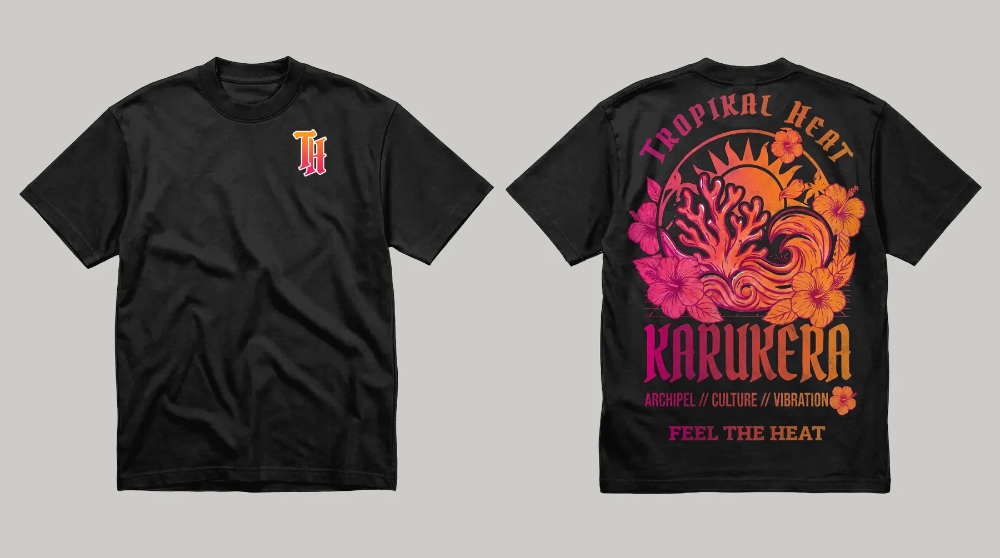
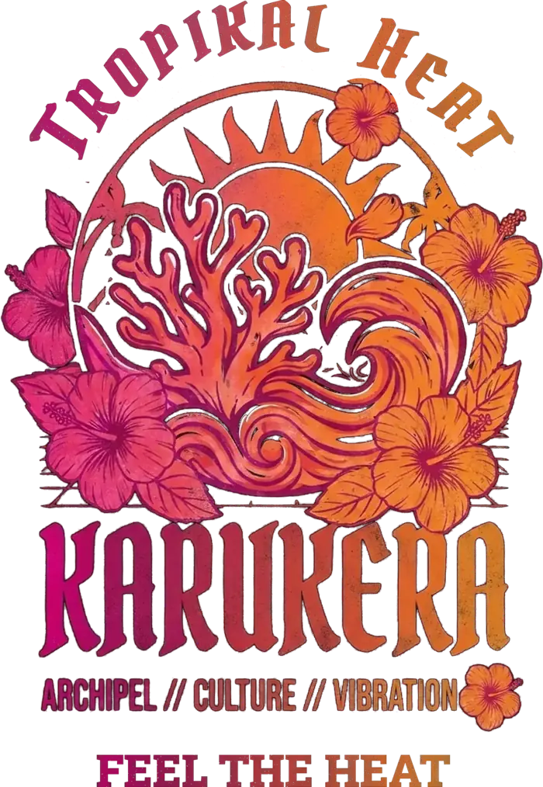
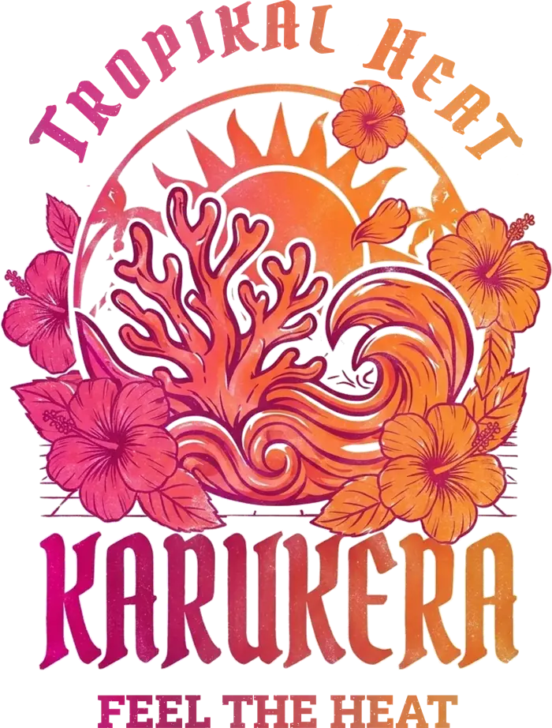
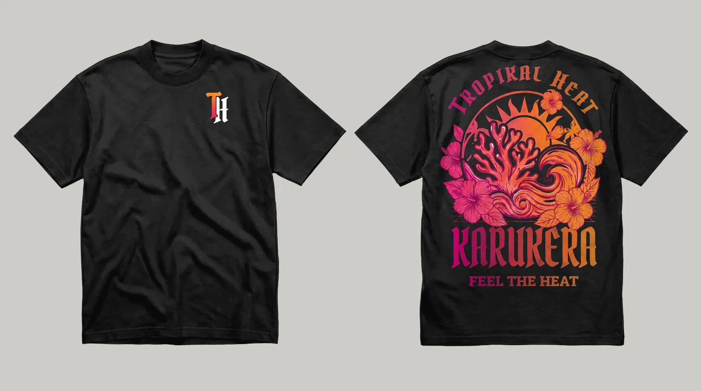
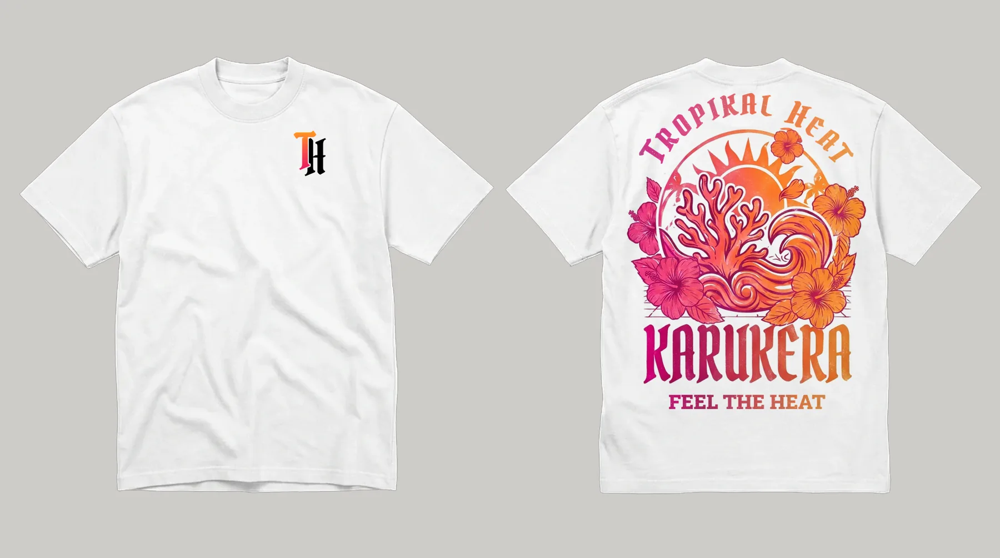

Lookbook · Collection n°1
KARUKERA
L'île aux belles eaux.
Le nom que les Kalinagos donnaient à la Guadeloupe. Notre première collection lui rend hommage : le soleil, le corail, la vague et les hibiscus.

01 T-shirt noir · TH dégradé contour blanc · dos KARUKERA

Le visuel du dos
Soleil, corail et vague.
Le soleil des Antilles, le corail, la vague et les hibiscus, encadrés par l'arc TROPIKAL HEAT. Une illustration façon gravure, finie au grain vintage, dans le dégradé coucher de soleil de la marque.
- Visuel du dos 27 × 36 cm
- Impression DTF en couleur
- Slogan : Feel the heat
Le dos en 4 versions
Quatre déclinaisons.


02 T-shirt blanc · TH dégradé contour noir · dos KARUKERA
La signature
Le monogramme TH.
Le T et le H entrelacés, en lettres gothiques, dans le dégradé coucher de soleil. Porté au cœur, à environ 10 cm du centre : contour blanc sur le noir, contour noir sur le blanc.
La gamme
Quatre combinaisons.
Deux coloris, deux versions du TH au cœur, un même visuel au dos.


Le fondateur
J'ai lancé Tropikal Heat avec mes propres moyens, ici en Guadeloupe, avec une envie simple : porter la chaleur de nos îles avec style.